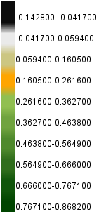

<html lang="en">
<head>
    <meta charset="UTF-8">
    <meta name="viewport" content="width=device-width, initial-scale=1.0">
    <title>my firt leaflet</title>
    <!-- link css leaflet -->
    <link rel="stylesheet" href="https://unpkg.com/leaflet@1.9.4/dist/leaflet.css"
    integrity="sha256-p4NxAoJBhIIN+hmNHrzRCf9tD/miZyoHS5obTRR9BMY="
    crossorigin=""/>
    <!-- linlk js leaflet -->
     <!-- Make sure you put this AFTER Leaflet's CSS -->
 <script src="https://unpkg.com/leaflet@1.9.4/dist/leaflet.js"
 integrity="sha256-20nQCchB9co0qIjJZRGuk2/Z9VM+kNiyxNV1lvTlZBo="
 crossorigin=""></script>
 <link rel="stylesheet" href="https://www.w3schools.com/w3css/4/w3.css" />
 <style>
    body {
    padding: 0;
    margin: 0;
    }
    
    html,
    body,
    #map {
    height: 100%;
    width: 100%;
    }
    </style>
    
</head>
<body>
    <!-- แบ่งส่วนหน้าจอ -->
    <div id="map" style="width: 100%; height: 100%"></div>
    <script>
        var map = L.map('map').setView([13.00797050307946, 99.92532704298152],10);
        //import based map
        var OSM = L.tileLayer('https://tile.openstreetmap.de/{z}/{x}/{y}.png', {
maxZoom: 18,
attribution: '&copy; <a href="https://www.openstreetmap.org/copyright">OSM</a> contributors'
}).addTo(map);

var OpenTopoMap = L.tileLayer('https://{s}.tile.opentopomap.org/{z}/{x}/{y}.png', {
	maxZoom: 17,
	attribution: 'Map data: &copy; <a href="https://www.openstreetmap.org/copyright">OpenStreetMap</a> contributors, <a href="http://viewfinderpanoramas.org">SRTM</a> | Map style: &copy; <a href="https://opentopomap.org">OpenTopoMap</a> (<a href="https://creativecommons.org/licenses/by-sa/3.0/">CC-BY-SA</a>)'
}).addTo(map);
var CyclOSM = L.tileLayer('https://{s}.tile-cyclosm.openstreetmap.fr/cyclosm/{z}/{x}/{y}.png', {
	maxZoom: 20,
	attribution: '<a href="https://github.com/cyclosm/cyclosm-cartocss-style/releases" title="CyclOSM - Open Bicycle render">CyclOSM</a> | Map data: &copy; <a href="https://www.openstreetmap.org/copyright">OpenStreetMap</a> contributors'
});
var wmsLayer = L. tileLayer.wms('http://localhost:8080/geoserver/petchaburi2019/wms?' , {
    layers: 'petchaburi2019:petchaburi2019',
    format: 'image/png',
    transparent: true,
});
var wmsLayer_2 = L. tileLayer.wms('http://localhost:8080/geoserver/petchaburi2019/wms?' , {
    layers: 'petchaburi2019:petchaburi2020',
    format: 'image/png',
    transparent: true,
});
var wmsLayer_3 = L. tileLayer.wms('http://localhost:8080/geoserver/petchaburi2019/wms?' , {
    layers: 'petchaburi2019:petchaburi2021',
    format: 'image/png',
    transparent: true,
});
var wmsLayer_4 = L. tileLayer.wms('http://localhost:8080/geoserver/petchaburi2019/wms?' , {
    layers: 'petchaburi2019:petchaburi2022',
    format: 'image/png',
    transparent: true,
});
var wmsLayer_5 = L. tileLayer.wms('http://localhost:8080/geoserver/petchaburi2019/wms?' , {
    layers: 'petchaburi2019:petchaburi2023',
    format: 'image/png',
    transparent: true,
});


// รวม based map ทำเครื่องมือแยก based map
var baseLayers = {
        "OSM" : OSM,
        "OpenTopoMap" : OpenTopoMap,
        "CyclOSM" : CyclOSM
    };
    var overlaymaps = {
    "2019": wmsLayer, 
    "2020": wmsLayer_2,
    "2021": wmsLayer_3,
    "2022": wmsLayer_4,
    "2023": wmsLayer_5
};
L.control.layers(baseLayers,overlaymaps).addTo(map);

//description/Legend
var legend = L.control({position: "bottomright"});
legend.onAdd = function(map) {
var div = L.DomUtil.create("div", "legend");
div.innerHTML = 
''+
'<p><b>ป่าไม้ภาคตะวันตก</b></p><hr>' + //เปลี่ยน
'Created by ถิรพุทธิ์ ดอนขันไพร,นันทิศ ยิ่งเกียรตินนท์ และพงศกร มั่นคง<br>' + //เปลี่ยน
'ID: 64103010014 | 64103010296 | 64103010302<br>'+ //เปลี่ยน
'';

return div;
};
legend.addTo(map);


</script>
</body>
